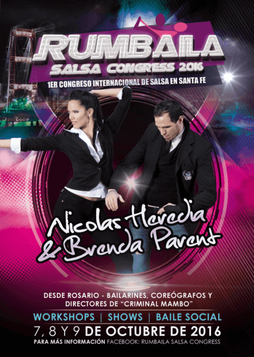

Primer Congreso Internacional de Salsa en la ciudad de Santa Fe, a realizarse del 07 al 09 de Octubre de 2016 en el Centro de Convenciones Los Maderos "Complejo Turístico Puerto Ribera".
Se trata de un evento dirigido a todo público con la presencia de artistas nacionales e internacionales de primer nivel. Más de 15 talleres de baile, 3 noches de espectáculos y baile social, Djs y locución del evento de lujo, compañias de baile y grupos invitados de distintos puntos de Argentina, Orquesta en vivo y mucho más.
Pueden ponerse algunos links de redes sociales, siempre es bueno. Tambien esta bueno poner un mapa, puede ponerse un filtro y estilo al mapa(no muy flexible, pero es algo personalizable)